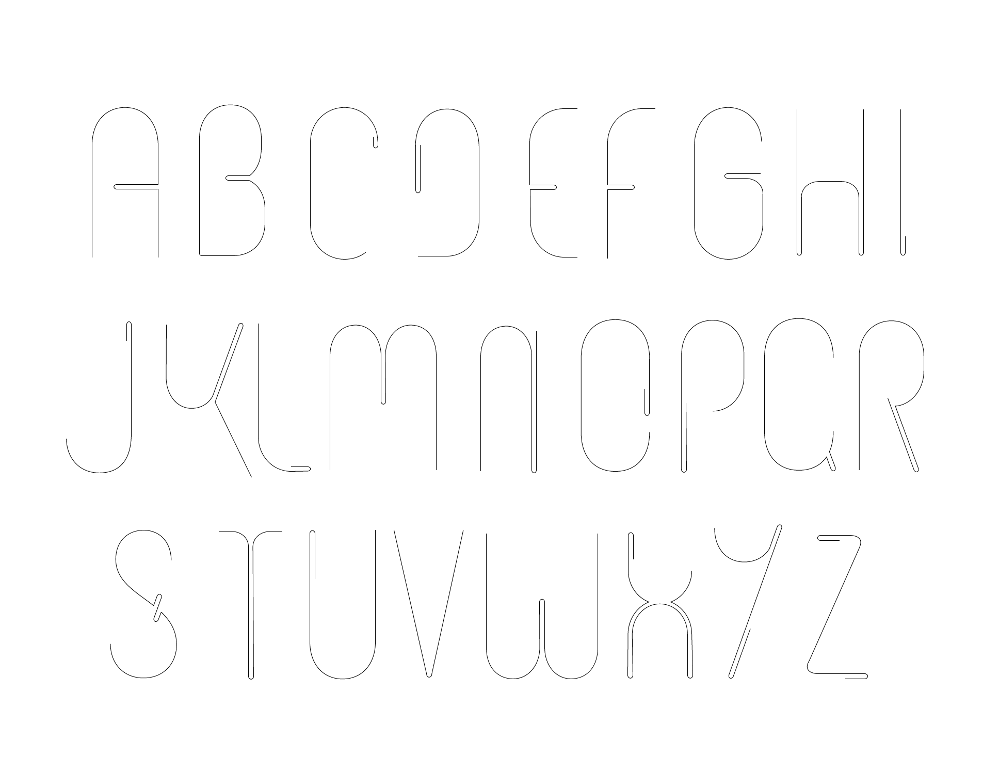
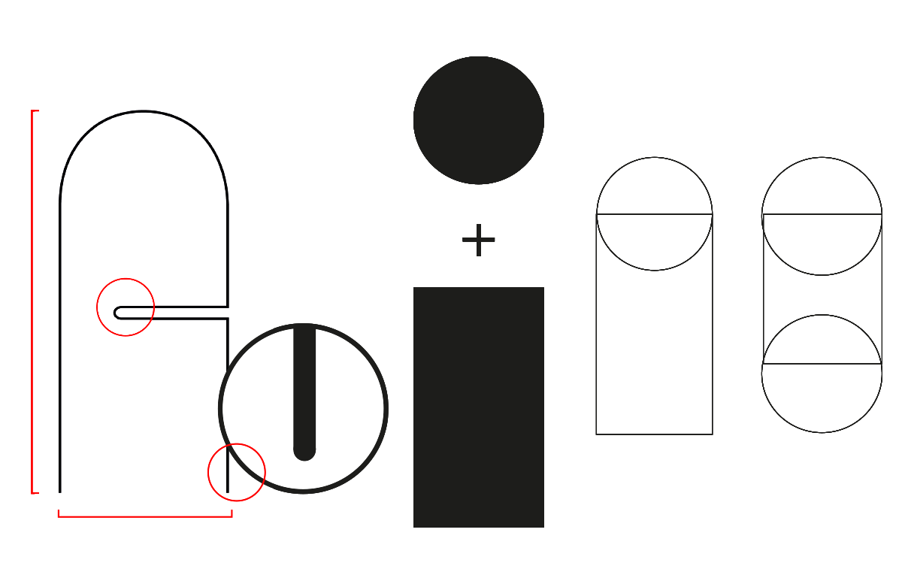
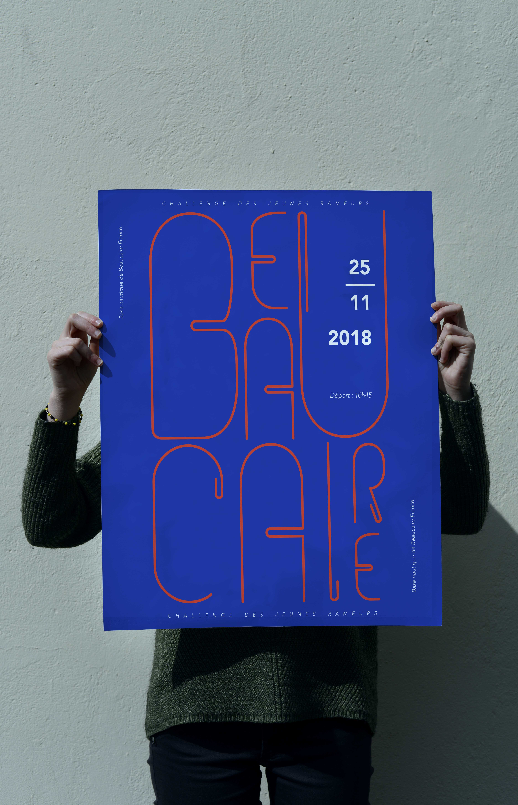

Project: creation of a typeface for a rowing tournament.
 Description: At first, the work of the typeface was more figurative: body position, movement sequencing, the boat and the wake on the water. In a second part conceptual aspects such as the prestigious image of this discipline as well as the idea of harmony became important. The rowers’ movements have to be synchronized and bounded by a team spirit. The continuous motion is the main idea of the typeface: It imitates the movement of the paddles and of the rower’s arms. Allowing the boat to be balanced in order to avoid jolts. The flexibility of the outline recalls the fluidity of those movements. The widths in-between the letters are narrow. The very thin drawing of the letters is reminiscent of the rowers’ slender. The technical and specific wrist movement indicates the blades’ orientation changing (horizontal to vertical). Therefore the boat receives enough energy to go forward (stage of propulsion). At the end of this so-called movement, the rowers bring the blades at the rear and reiterate the movement.
Purpose: The aim of this typeface is to express the idea of progress, effort, and flexibility, reflected through different ways in both the type anatomy and graphical articulation inside the words.